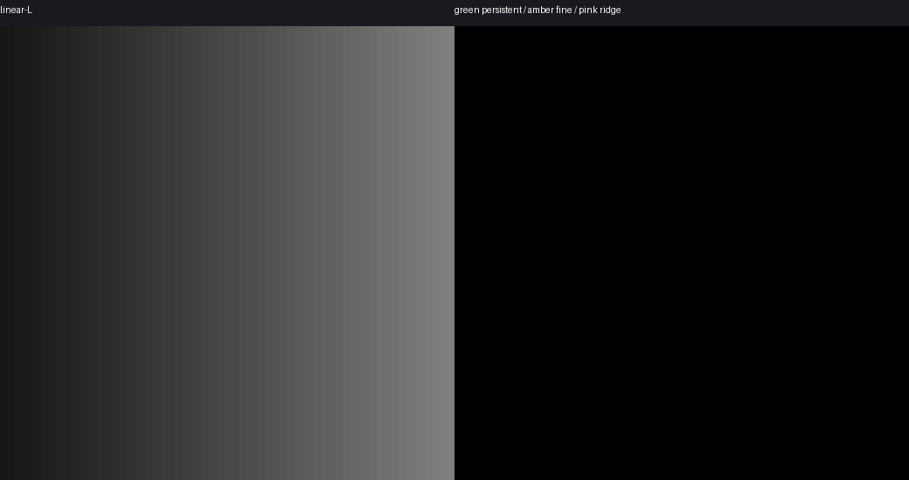
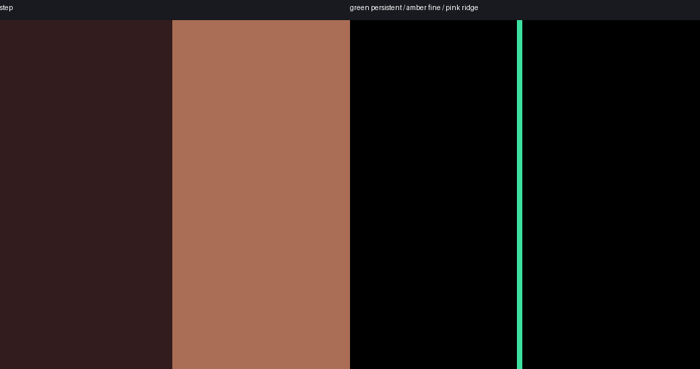
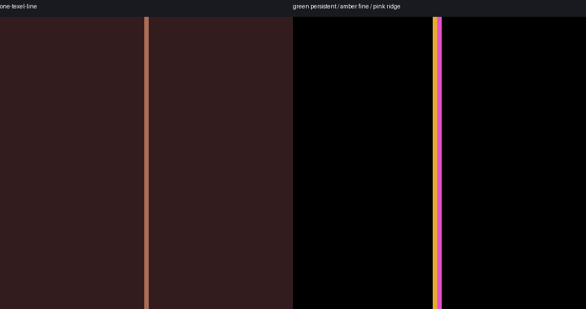
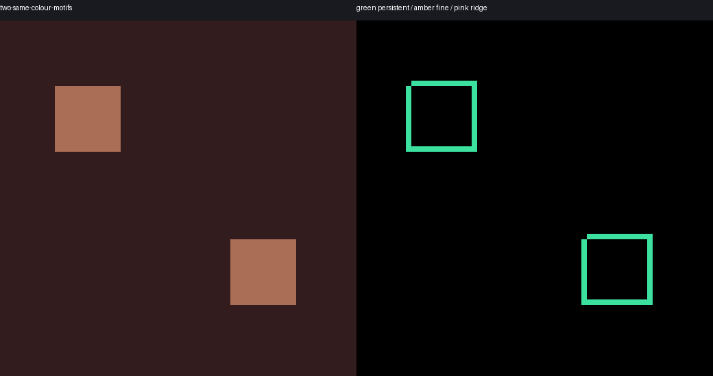
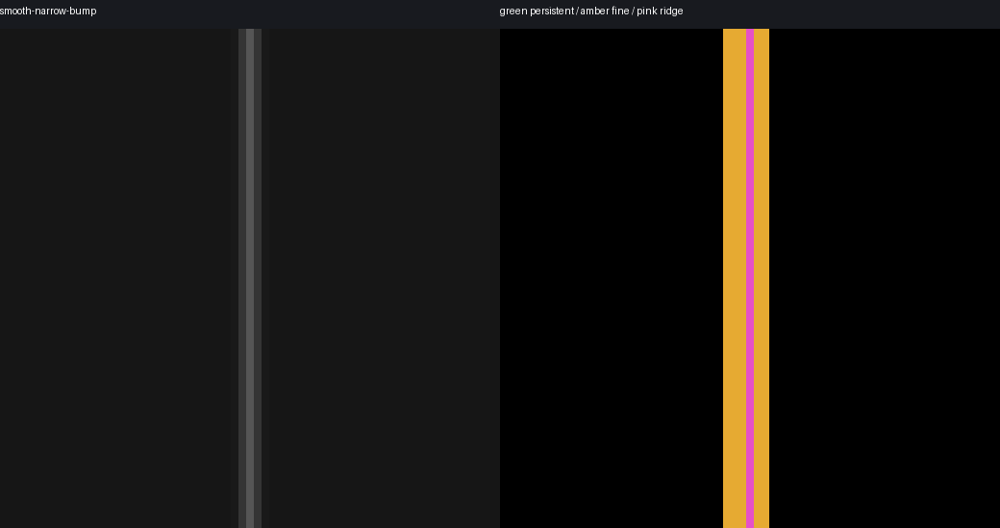
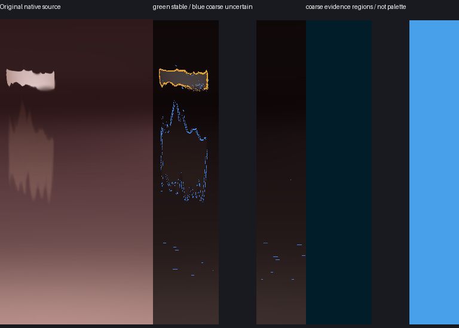
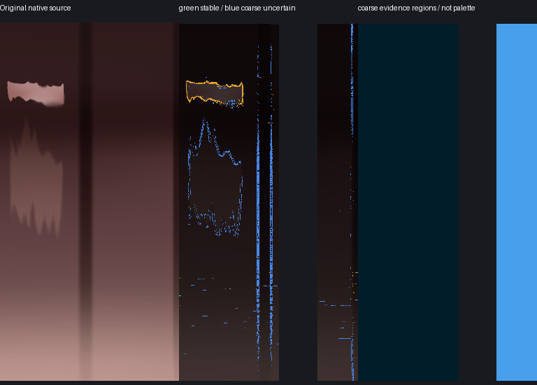
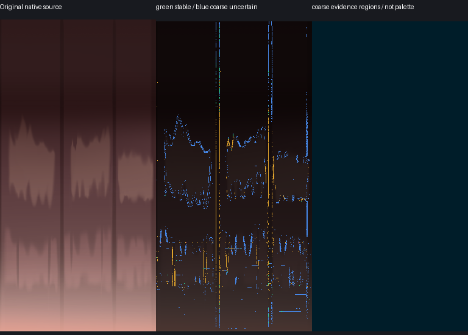
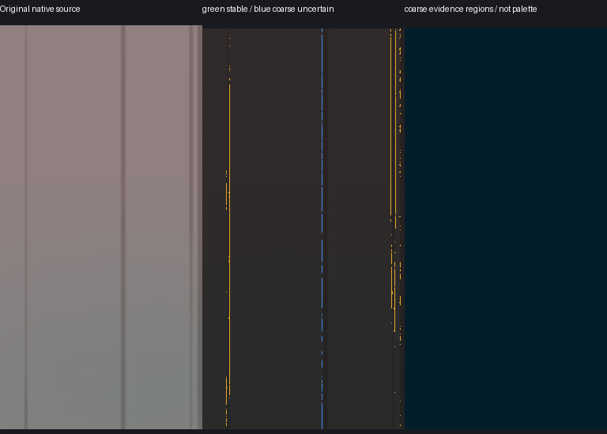

오프라인 source 증거 / 제품 미적용 / 미술 미채택.
Lab 구간 절단을 사용하지 않고 양쪽 기울기를 제거한 경계 신호를 여러 스케일로 검사했습니다. 원본 RGB와 palette는 그대로입니다. 열린/흐린 무늬를 완성된 특징 영역으로 조립하는 단계는 남았습니다.
수식·전제·실패·실행 차단 · 합성9사례 · 원본4장 수치 · 저장373셀 UV 대응 · 수정 전 실패
왼쪽은 source, 오른쪽은 증거입니다. 초록: 모든 스케일의 jump, 주황: fine-only, 분홍: 얇은 선/봉우리 후보입니다. 원본색을 바꾸지 않습니다.





원본 / 경계 증거 / coarse 연결 면입니다. 초록은 모든 스케일 지지, 파랑은 큰 스케일에서만 보이는 불확실 신호, 주황은 미세 신호, 분홍은 ridge 후보입니다. 오른쪽 연결 면이1개여도 열린 contour가 없다는 뜻이 아닙니다.




실제 원본에는 끊긴 경계가 많이 남습니다. source 증거를 추출한 것이며 깨끗한 최종 픽셀아트의 성공이 아닙니다. 최소 면적 삭제나 gap 강제 연결로 수치를 맞추지 않았습니다. 같은 RGB/Q인데 출력이 다른18쌍도 기존 출력의 실패로 그대로 기록했습니다.
필수 입력/예산/복원 계약 · 합성 packet 및8거부 검사 · API·프로젝트 근거
같은 sourceId/viewId/frame/serial의 평가 정점·재질·UV·bonepose, raw/effective CPU/GPU projection, 실제 tap 좌표, source 색·g·owner/depth/coverage, 실제 눈 대입 전 backing을 대응시키도록 준비했습니다. C#은 미컴파일·미실행입니다.
실행 전 차단: 정상 renderer가 설정하는 _BodyScope551 global buffer의 원래 binding을 회수할 수 없습니다. 공개 getter 없이 null을 추정하거나 private reflection을 사용하지 않습니다. 복구 가능한 binding 연결 또는 local-binding 경로가 준비되기 전 기존 Play 방식을 재사용하지 않습니다.
Unity 접근·Play·렌더·제품 변경·CUA·GC·SaveAssets·앱 종료0회. 이 페이지의 이미지는 원본/수치 기반 오프라인 자료입니다.